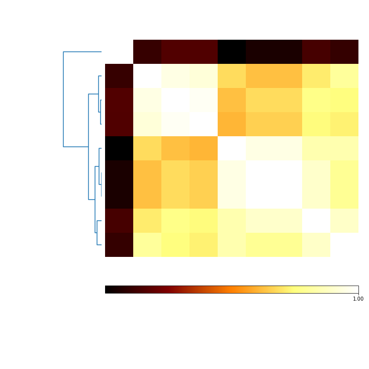

Demonstrate the ability to get reproducible results from non-deterministic algorithms¶
In [1]:
import pandas as pd
import matplotlib.pyplot as plt
from sklearn import datasets
import openensembles as oe
n_samples=1500
X,y = datasets.make_blobs(n_samples=n_samples, random_state=8)
df = pd.DataFrame(X)
d = oe.data(df, [1,2])
In [2]:
d.plot_data('parent')
Out[2]:
Compare results with and without using a random seed: Kmeans¶
In [3]:
c = oe.cluster(d)
c_seed = oe.cluster(d)
K = 4 # choose a K such that solution is not ideal
numIterations = 10
for i in range(1,numIterations):
name = 'kmeans_' + str(i) #to append a new solution, it must have a name (dictionary key) that is unique
c.cluster('parent', 'kmeans', name, K, init = 'random', n_init = 1)
c_seed.cluster('parent', 'kmeans', name, K, random_seed=0, init = 'random', n_init = 1)
Mutual information should show results vary when seed is not forced to the same starting point¶
In [4]:
mi_randomSeeds = c.MI(MI_type='normalized')
mi_randomSeeds.plot(add_labels=False)
Out[4]:
When the seed is forced to the same, Kmeans should return the same results, as indicated by mutual information of 1 between all clustering results.¶
In [5]:
mi_sameSeeds = c_seed.MI(MI_type='normalized')
mi_sameSeeds.plot(add_labels=False)
/Users/knaegle/anaconda/envs/py36/lib/python3.6/site-packages/matplotlib/axes/_base.py:2903: UserWarning: Attempting to set identical left==right results
in singular transformations; automatically expanding.
left=0.0, right=0
'left=%s, right=%s') % (left, right))
Out[5]:

Compare results with and without random seed for spectral clustering¶
In [6]:
c = oe.cluster(d)
c_seed = oe.cluster(d)
K = 4 # choose a K such that solution is not ideal
numIterations = 10
for i in range(1,numIterations):
name = 'spectral_' + str(i) #to append a new solution, it must have a name (dictionary key) that is unique
c.cluster('parent', 'spectral', name, K)
c_seed.cluster('parent', 'spectral', name, K, random_seed=0)
Mutual information should show results vary when seed is not forced to the same starting point¶
In [7]:
mi_randomSeeds = c.MI(MI_type='normalized')
mi_randomSeeds.plot(add_labels=False)
Out[7]:

When the seed is forced to the same, Spectral clustering should return the same results, as indicated by mutual information of 1 between all clustering results.¶
In [8]:
mi_sameSeeds = c_seed.MI(MI_type='normalized')
mi_sameSeeds.plot(add_labels=False)
/Users/knaegle/anaconda/envs/py36/lib/python3.6/site-packages/matplotlib/axes/_base.py:2903: UserWarning: Attempting to set identical left==right results
in singular transformations; automatically expanding.
left=0.0, right=0
'left=%s, right=%s') % (left, right))
Out[8]:

In [ ]: